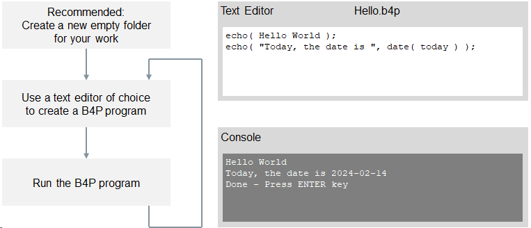
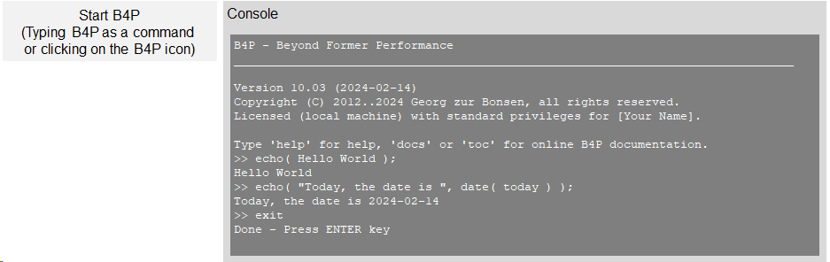

Introduction
B4P can either be started directly where, by default, interactive mode is activated, or alternatively programs written in B4P (with the file ending .b4p) can be executed directly. Windows, LINUX and MacOS provide easy means to start B4P, either by
- Starting a B4P Program.
- Starting B4P Interpreter directly to make use of interactive mode, or
Starting a B4P Program
With B4P installed, the B4P programs are directly executable files under the supported operating
systems. For example you can start these programs by double-clicking on the file names in file browsers,
or typing "B4P program_name.b4p" in a command line.
Details are provided in the following sections specific to Windows, LINUX and MacOS.
The workflow is very simple and illustrated below:

Starting B4P Interpreter in interactive mode
Alternatively, you can B4P can be started directly and make use of the interactive mode.
Either double-click on the B4P icon on the start menu or desktop, or type "B4P" on a console for command line inputs.
If B4P is started from the start menu or desktop, then it will go to the starting directory automatically.
